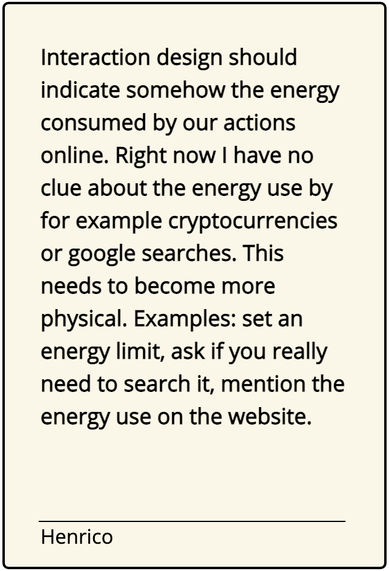

<!DOCTYPE html>
<html id="top">
    <meta name="viewport" content="width=device-width, initial-scale=1">
<head>
<title>_Huddle</title>
<link rel="stylesheet" href="style.css">
<link rel="stylesheet" href="https://unpkg.com/flickity@2.2.2/dist/flickity.min.css" media="screen">
<link href='https://fonts.googleapis.com/css?family=Quicksand' rel='stylesheet'>
<link href='https://fonts.googleapis.com/css?family=Raleway' rel='stylesheet'>
<link href='https://fonts.googleapis.com/css?family=Roboto Mono' rel='stylesheet'>
<link href="https://fonts.googleapis.com/css?family=Open+Sans" rel="stylesheet">
<link rel="stylesheet" href="https://www.w3schools.com/w3css/4/w3.css">
<link rel="shortcut icon" type="image/png" href="img/favicon.png"/>
<script src="https://unpkg.com/flickity@2.2.2/dist/flickity.pkgd.min.js"></script>

<script src="https://cdnjs.cloudflare.com/ajax/libs/socket.io/2.0.3/socket.io.js"></script>
<script src="https://ajax.googleapis.com/ajax/libs/jquery/3.5.1/jquery.min.js"></script>
<script src="https://unpkg.com/axios/dist/axios.min.js"></script>
<script src="script.js"></script> 
<script src="modal.js"></script> 

<script>

// socket connection to server.js
var socket = io.connect(); //load socket.io-client and connect to the host

function LEDOn() {
    socket.emit("state", 1); //send button state to server
console.log("button pressed");
}

function LEDOff() {
    socket.emit("state", 0); //send button state to server
}


function MessageLanding(){
    d = new Date().toString();
    socket.emit("message", d);
    
    console.log("message", "welcome message send");
}

function MessageSign(){
    var nameSig = document.getElementById("nameSig").value;
    
    socket.emit("sign", nameSig); //send button state to server
    console.log("welcome message send");
}

function MessageContribute(){
    var name = document.getElementById("nameCard").value;
	var manifestInput = document.getElementById("cardInput").value;
    var d = new Date().toString();

    socket.emit("text", manifestInput ); //send button state to server
    setTimeout(() => { console.log("World!"); }, 500);
  
    socket.emit("name", name ); //send button state to server
    setTimeout(() => { console.log("World!"); }, 500);
    
    
    
    // socket.emit("message", manifestInput); //send button state to server
    // setTimeout(() => { console.log("name send to printer"); }, 500);
    // socket.emit("message", name ); //send button state to server
    console.log("text send to printer");

}


</script>
 
</head>
<body>

<div class="header">
    <div class="textFlex">
        <p id="alignLeft" class='textHeading'>_Open 8:00-20:00 🕗</p>
        <p class='textHeading' > _Eindhoven 🌍</p>
        <p class='textHeading'>_ActiveVisitors:1 👀</p>
        <p class='textHeading'>_Online 🟢</p>
    </div>
    </div>
<div class="front">


<div class="bg"></div>

<div class="titlePage">
<h1 id="title">_Huddle </h1>
    
    <p id="subTitle">where people come together,<br> to read and contribute to the Digital Manifesto.</p>

</div>


<div id="numbersEngagement">
<p class='textEngagement'>Signatures<span id="amountSig">
    0</span></p>
    <p class='textEngagement' >Contributors<span id="amountCont">
    0
    </span></p>
</div>
</div>
<div class="wrapper"> 

    <div class="flexVersion">
    <p id="version">Current version: V 1.0.0<br>
        Next release: 21 Days</p>
       <!--  <a href="#" class="versionButton">Version History 🕙</a> -->
    </div>

<div class="currentManifest">

    <h1 id="manifestTitle">The Digital Design Manifesto</h1>
<div id="manifestText">
<p  >
    The craft of design is failing to serve humans. </p>

<p>Products and services are optimized for efficiency and standardization valuing profit over privacy. 
We, humans, are becoming the product to be consumed by our technologies. </p>

<p>Addicted by design.</p>
<p>

    I believe that good design can also be the remedy to this issue. Creating humane technology that operates for the common good, strengthening our capacity to tackle our biggest global challenges. 
    Celebrating fluidity, creating interactions that trigger reflection, and through that empower users.
</p><p>
    Designing things away and create hacks to take back control.
   
</p>

<p>
    To achieve this, we need to identify different handles that we can use in our process to create more humane technology.

</p>


<p>
Design handles<br>
🪢 Friction - During the use of apps or websites create moments that make people reflect on their behavior at that moment. <br>
👀 Visibility - Show through UI or physical elements what is the algorithms running in the background are doing. <br>
🔋 Disposability of content - Make digital content have value by changing the update rate. Make things refresh once per 24u, not every second. <br>

</p>


</div>
</div>


<div class="flexSign">
   <p class="textCall">Do you agree with this manifest, you can sign it to show your support. </p>
    <input placeholder="Your name" id="nameSig"></input>
    <a href="#top" onclick="onSign(); 
    MessageSign()" id="signButton">Sign 🖋️</a>
    <p class="textCall">Find out how you can contribute to this manifesto below.</p>

</div>


<div class="section">

<h2 class="title">Contribute to the manifest</h2>
<p class="text">This manifesto is a living document. As individuals, we can not take up the challenge to solve this big issue. However together we can craft a text that can take a stance and inspire the industry. By donating your thoughts to this project you can contribute. The cards submitted will be a collection of thoughts and ideas around this topic, they will be integrated into new versions of the manifesto. 
  
    

    <h3 class="title">Donate a card</h3>
</p> <p class="text" >Do you have ideas about how our digital world should look like?
    In which ways do you think we can achieve that? How do we create a healthy and sustainable digital world?
</p>
   

<div id="inputCard">

<textarea id="cardInput" placeholder="Type here..." rows="15" cols="50" maxlength="400"></textarea>
<input id="nameCard" placeholder="Your name" ></input>
<a href="#top" onclick="onClickSubmit(); 
MessageContribute()" id="submitCard">Submit 💌</a>

</div>

<h3 id="examplecardtext">Example donations</h3>


  <div class="carousel"
  data-flickity='{ "imagesLoaded": true, "prevNextButtons": false, "percentPosition": false, "initialIndex": 1}'>
  
  
  
  
  

</div>
<a href="database.html"  id="seeAll">See all 🖼️</a>
</div> 


<div class="section" >

    <h2 class="title" >About this project</h2>
    <p class="text">As a graduating Interaction Design student, I saw the need to reflect on the industry I want to work for. Through that explore how we can design empowering and sustainable relationships with the digital. By observing the world around me I see that the "things" we interact with are becoming complex living systems. The interaction designers' job is to
        shape an experience around this. With this comes great responsibility, how do we give people the tools to interact with the digital without controlling or downgrading them? This project explored ways of doing this; create hacks and designing certain technologies out of our lives.</p>
    
<h4>_Huddle</h4>
<p class="text">The device is printing out a log of every interaction when people sign the manifest or contribute to the project by submitting a card. This physical printout is to create visibility and acts as an unerasable database. </p>

<div class="modelImages">


</div>

<p class="text">_Huddle is a nomad server. Meaning that the device itself is hosting this website. It is a nomad because it can work anywhere as long as it has WiFi and power. </p>

<p class="text">The reason that the device is the server is to immediately put some principles of the Manifesto to practice. I now have full control over this website. Which allowed me to give the website opening hours by using a time switch. Because why does our technology need to be on day and night? Next to this I can take responsibility for the project and unplug it in case that is needed. </p>


    <h4 class="titleExp" >Experiments</h4>
    <p class="text">The first three design handles of the manifest are derived from experiments done as part of the thesis Undermine_through_design. These experiments explored hacks or interventions to challenge our relationship with the digital.</p>


<div class="experiments">
    <div>

<h3 id="eindhovenTitle">The Toilet(sc)roller</h3>
</div>

<div id="id01" class="w3-modal">
    <div class="w3-modal-content">
      <div class="w3-container"> 
          <span onclick="document.getElementById('id01').style.display='none'" class="w3-button w3-display-topright">&times;</span>
         
        <div class="image-container">
       
        
        
        
    </div>
    <div class="textModal">
        <h5>The Toilet (sc)roller</h5><p>Are we more aware of our behaviour when it is reflected by the space around us?<br>Using our physical surroundings to create friction in our engagements with the digital.</p>
      </div>
    </div>

      
      
    </div>
  </div>

<div>

<h3 id="eindhovenTitle">Singel Frame Feed</h3>
</div>

<div id="id02" class="w3-modal">
    <div class="w3-modal-content">
      <div class="w3-container"> 
          <span onclick="document.getElementById('id02').style.display='none'" class="w3-button w3-display-topright">&times;</span>
         
        <div class="image-container">
       
        
        
        
    </div>
    <div class="textModal">
        <h5>Single Frame Feed</h5><p>What if we had to live with a single frame of our feed for 24h? By changing the update rate do we value our content more? <br>Do content makers become artist exhibiting in peoples houses?
          Who deciedes which content is shown, us or an algorithm?  
        By altering the update rate we might revalue our content, this to counter our disposable mindset we have towards our data.</p>
      </div>
    </div>

      
      
    </div>
  </div>


<div>

<h3 id="eindhovenTitle" >Data unmatcher</h3>
</div>

<div id="id03" class="w3-modal">
    <div class="w3-modal-content">
      <div class="w3-container"> 
          <span onclick="document.getElementById('id03').style.display='none'" class="w3-button w3-display-topright">&times;</span>
         
        <div class="image-container">
       
        
        
        
    </div>
    <div class="textModal">
        <h5>Data unmatcher</h5><p>How could an offboarding experience with your data look like? Are we aware of the amount of data we have? Do we still need this data?<br>Why do we clean-up our oceans but not our servers?<br>
            When we visualize our digital traces and present them to people we can actively take responsibility.</p>
      </div>
    </div>

      
      
    </div>
  </div>


</div>


</div>

<div class="section contactSection">

    <h2 class="title" >Any thoughts about this project or want to browse through the physcial database, don't hesitate to hit me up 👋.</h2>
    
    <h3 id="eindhovenTitle">EINDHOVEN, NL<br> Current location of _Huddle.</h3>
    <p id="textContact">
        Project by Ilse Pouwels<br>
        📧 ilsepouwels.design@gmail.com<br>


        🧰 www.ilsepouwels.nl</p>
        <p id="thesisdisclaimer">
        This website is one of the outcomes of an thesis project for MFA Interaction Design at the Umeå Institute of Design


    </p>


</div>


</body>
</html>
